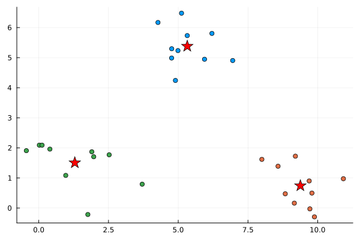

Examples
Basic Example
Below is a basic usage example of the cluster.jl package. This example demonstrates how to set up and use the package with a dataset that has distinct clusters.
# Load the Cluster.jl package
using Cluster
using Random
# Set the random seed for reproducibility
Random.seed!(1234)
# Create a simple 30x2 dataset with distinct clusters
data = vcat(
[randn(10, 2) .+ [1 1]; # Cluster 1 around [1, 1]
randn(10, 2) .+ [5 5]; # Cluster 2 around [5, 5]
randn(10, 2) .+ [9 1]] # Cluster 3 around [9, 1]
)
# Print the first 3 data points
println("Data: ", data[1:3, :])
# Print the shape of the data
println("Shape: ", size(data))
# Initialize the clustering algorithm
model = Cluster.KMeans(k=3, mode="kmeans") # also supports "kmeanspp"
# Fit the model to the data
Cluster.fit!(model, data)
# Print the centroids of the clusters
println("Centroids: ", model.centroids)
# Test Data
test_data = [
1.0 1.0; # Cluster 1
1.5 2.0; # Cluster 1
0.5 1.5; # Cluster 1
5.0 5.0; # Cluster 2
8.0 9.0; # Cluster 2
4.5 5.5; # Cluster 2
9.0 1.0 # Cluster 3
9.5 1.5 # Cluster 3
8.5 1.0 # Cluster 3
]
println("Test Data: ", test_data)
println("Note: The labels might differ from the original cluster labels due to random initialization.")
# Predict the cluster for each data point
clusters = Cluster.predict(model, test_data)
# Print the resulting clusters
println("Cluster assignments: ", clusters)
# Plot the clusters
using Plots
scatter(data[:, 1], data[:, 2], color=model.labels, legend=false)
scatter!(model.centroids[:, 1], model.centroids[:, 2], color=:red, shape=:star, markersize=10)Data: [1.9706563288552144 1.7059931337826102; 0.02078158846480027 2.0915552820534096; 1.9018608835940936 1.8714978528809079]
Shape: (30, 2)
Centroids: [5.323783878267616 5.3799185434708665; 1.2924765251990036 1.5065284738108655; 9.378762022741931 0.7429033370233344]
Test Data: [1.0 1.0; 1.5 2.0; 0.5 1.5; 5.0 5.0; 8.0 9.0; 4.5 5.5; 9.0 1.0; 9.5 1.5; 8.5 1.0]
Note: The labels might differ from the original cluster labels due to random initialization.
Cluster assignments: [2, 2, 2, 1, 1, 1, 3, 3, 3]
GKS: cannot open display - headless operation mode activeThis is the resulting plot of the clusters:

Interactive Example Notebook
This mike take some time to load, but you can run the example notebook in your browser by clicking the Binder link below. Here you can play around with generating different datasets and clustering them using the Cluster.jl package.